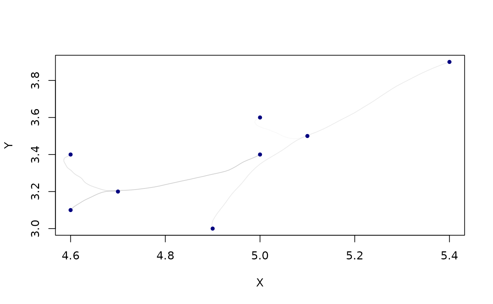

Bundle a graph once with Hammer edge bundling. Pass the result to the
overlays argument of embed_plot(), embed_ggplot() or
embed_plotly(). All three also accept an inline specification, which
computes the paths for that call.
Arguments
- coords
Matrix of embedded coordinates, with as many rows as observations, and 2 columns.
- overlay
A list with
edges(an edge table as inembed_edges()) androute = "hammer". Self-loops are omitted. Each undirected pair keeps its first row and weight. The default stroke has opacity 0.25. Setalpha = "weight"to map the numericweightcolumn linearly fromalpha_limits(defaultc(0, 1)) toalpha_range(defaultc(0.01, 0.25)). Weights outside the limits use the nearest endpoint. Opacity is continuous unlessalpha_binsis set to an integer of at least two. This rounds to the nearest equally spaced opacity level, including both endpoints, with ties rounded up. Setn_threadsto the maximum number of routing threads. The default of 0 and a value of 1 both run serially. Thread count does not affect the resulting paths.- pc_axes
If
TRUE, thecoordsare replaced by the first two (unscaled) principal components, which should have the effect of rotating the data (with a potential reflection) so the main variance aligns along the X-axis. Should not have any other scaling effect.
Value
A list of class vizier_overlay with the normalized edges,
ordered paths (columns x, y and edge_id), resolved coordinates,
axis setting and editable opacity settings. The edge_id in both tables
identifies the original input edge row.
Details
The native router samples each edge at 50 points and moves
them toward shared density ridges over 12 iterations. Membership weights
affect opacity. Drawing the result reuses the stored paths.
Use the same coordinate rows and pc_axes setting in each plot.
A display filter such as top hides whole paths.
To route a different graph, subset the edges before preparing.
Plotly uses one line trace per distinct displayed opacity. Set
alpha_bins = 4L on a copy to limit that widget to four edge traces.
Examples
xy <- as.matrix(iris[1:8, c("Sepal.Length", "Sepal.Width")])
edges <- data.frame(from = 1:4, to = 5:8, weight = c(0.1, 0.4, 0.6, 1))
hammer <- prepare_overlay(xy, list(
edges = edges, route = "hammer", alpha = "weight"
))
embed_plot(xy, colors = "navy", overlays = hammer)

binned <- hammer
binned$alpha_bins <- 4L
if (requireNamespace("plotly", quietly = TRUE)) {
embed_plotly(xy, colors = "navy", overlays = binned)
}